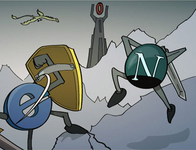
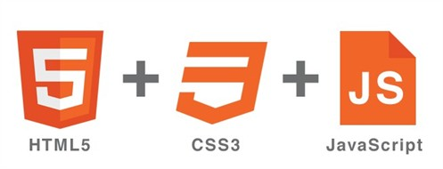

FIREFOX OS
El tiempo es ahora

Creado por Carlos Huamaní / @carlosHS92
¿Qué es Mozilla?
Personas interesadas en ayudar a otros y que desean trabajar en equipo para hacer algo mas grande.
Guerra de Navegadores
Netscape pierde contra el monopolio de Microsoft
Misión de Mozilla
Mantener la elección y la innovación en Internet
Firefox
100 millones de descarga el primer año
Herramientas para Desarrolladores
El kit básico por defecto
Marca e identidad visual
Pese a que el nombre Firefox se refiere al panda rojo, el diseño del logotipo es un zorro rojo
Firefox fue solo el comienzo
Thunderbird

Web Maker
La web debe ser para todos
Firefox para Android
Ser multiplataforma
Firefox OS
Rompiendo fronteras

Lenguaje de desarrollo
¡HTML5 para todos!
Estructura del Celular
- GONK
- GECKO
- GAIA
Gráficamente hablando
Firefox Marketplace
Busqueda adaptativa
Nuestros socios
¿Cómo empezar?
Amplia documentación en Mozilla Developer Network
Paso 1
Crea tu aplicativo web

Paso 2
Evalúa qué componentes deben ser offline
Paso 3
Empaqueta
{
"name": "My App",
"description": "My elevator pitch goes here",
"launch_path": "/",
"icons": {
"128": "/img/icon-128.png"
},
"developer": {
"name": "Your name or organization",
"url": "http://your-homepage-here.org"
},
"default_locale": "en"
}
Paso 4
Prueba
Paso 5
Publica